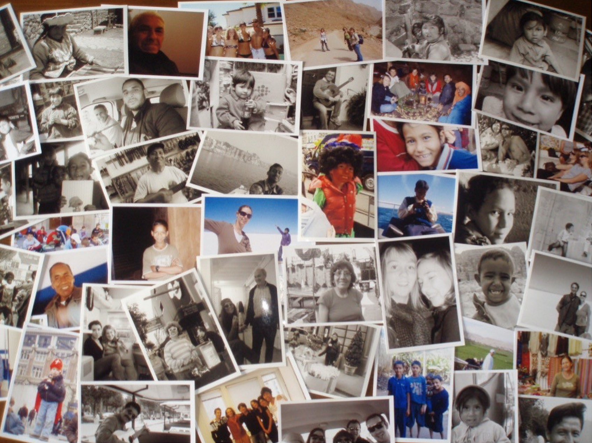
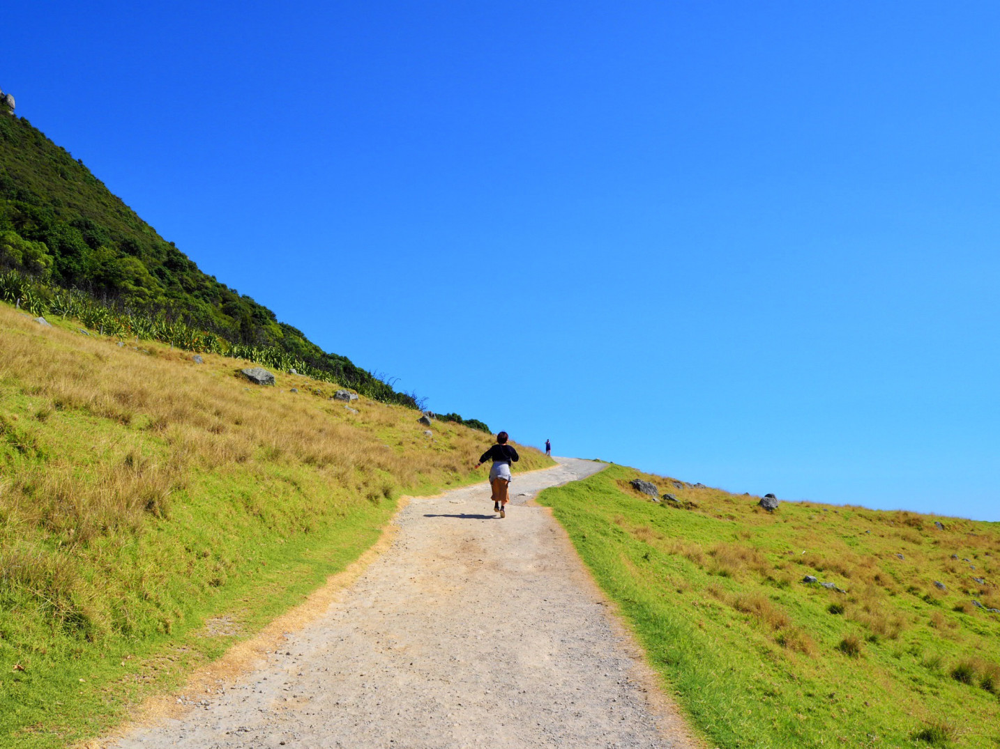
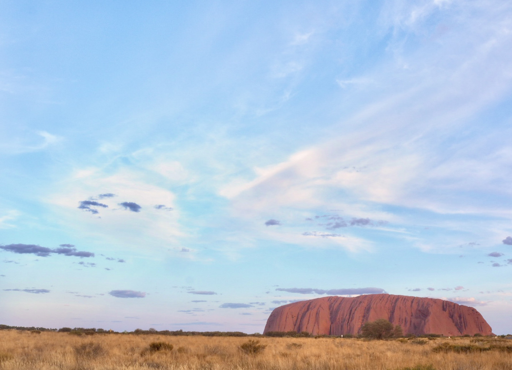
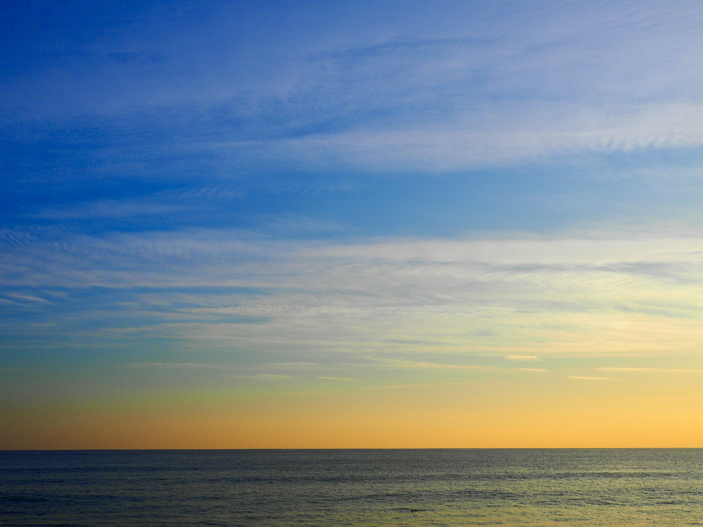

About us
私たちについて
VISION
哲学
もっと地球を楽しもう
楽しむことで感動が生まれ、
感動は課題解決のきっかけになります。
現代の社会問題を解決するために、
もっと地球を楽しむことができる事業を
展開していきます。
MISSION
事業の目的
100年間ワクワクできる世界をつくる
ギャップイヤーという
新しい選択肢を広めることで
well-being を促進し、
持続可能な暮らしと
地球環境の保全に貢献します。
VALUE
大切にしていること
Challenge
挑戦を絶対的に認める
Community
同志に出会う
Creative
楽しめる力を養う
BUSINESS
事業内容
Story
ストーリー
「自転車でディズニーランド」が僕の原体験
「あっちに面白い公園があるらしいよ！」
小学生の頃から、新しい世界を見るのが好きだった。
隣町の公園、川向いの違う県。
体育館の上、秘密基地の草藪の中。

東京外れの下町では、まだ子どもが子どもでいることを許されていた。
特に、自転車に乗って出かける日の朝は、空気の匂いが違う気がした。
あれはきっと、自由の匂いだった。
最終的にはディズニーランドまで行って、夢の国は自転車で行けることを知り、
ディズニーへの憧れは無くなった。
夢の国のポップコーンの匂いよりも、冒険の日の匂いの方が好きだと知った。
これがぼくの原体験。
世界一周とギャップイヤーとの出会い
だから、校則や上下関係が厳しい中学生時代はあまり面白くなく、
逆に自由を校風としている高校は楽しかった。
授業サボって出かけたり、ピアスあけたり、学校までピザのデリバリー頼んだり、
それこそ友達と自転車で三浦半島や江の島まで行ったり。
しかしまた、アメリカの大学進学を断念した後の、日本の大学生活は退屈だった。
それでも色んなバイトをして、これまで知らない世界を体験できることは面白かったなあ。
いま思うと大学を休学して、20歳で半年間の世界一周に行ったのも、その延長線なんだろう。
そこでは老若男女・多種多様な人がいて、一瞬一瞬がたまらなく楽しかった。
旅中、欧米の旅人からよく聞く言葉があった。
「ぼくはいまギャップイヤー中なんだ。」
「次はギャップイヤーを取ってまた旅をするよ。」
これが僕のギャップイヤーという概念との出会い。

休学した1年間は正にギャップイヤーだったと後から気がつくのだが、
もっと早く知っていれば、もっと気軽にやりたいこと（＝旅）への準備ができただろう。
親からの言葉、友人からの言葉、全然知らない人からの言葉。
「休んで大丈夫？」
「旅に行って何になるの？」
「ドロップアウト？」
対応は本当に面倒だったし、何度も心を折られそうになったから。
仕事に没頭の20代
旅行会社に就職してからは「Theサラリーマン」の働き方だったし、大変なこともたくさんあったけど、
会社、同僚、お客さんを通して、学生の頃とは比べ物にならないほど
多様な経験をすることができ、仕事にハマっていった。
ただ、仕事＝人生だった頃は、日々がモノクロで会社と自宅の往復ばかり。
旅行会社に勤めているのに旅にも行けない。
家族と顔を合わせる時間もないし、自分で企画した同窓会にも残業で行けなかった。
「ぼくは何をしているんだろう？」
入社以来目標としていたステップアップの話が来た時も、なぜか心はモヤっとしていた。
そんな時、肺結核と薬の副作用で70日間入院した。
でも強制的な健康生活は、僕の世界を明るくしてくれたんだ。
朝とはこんなにも感動の世界だったのかと驚き、食事を摂ることができることに感謝し、
家族や友人とゆっくり話す時間があることに安堵する。
身体が回復するのに比例して、精神も充実していった。
仕事に復帰した後は、これまでの7割くらいの力なのに、これまで以上の成果が出始めた。
結果、僕が狙っていた出世コース以外で、やりたいことが全部できて、会社を辞めた。
独立と幸福度
自由に使える日々は、責任や不安もあるけど、それ以上にワクワクした。
起きる時間も寝る時間も、働く時間も休む時間も、全部自分で決めることができる。
自分で人生の操縦桿を握っている感覚。これが最高に心地よかったんだ。
コロナ禍になり、旅関係の仕事ができなくなり、せっかくだから色々勉強してみようと思った。
農業、サーフィン、料理、歴史、体のこと、心のこと、もう一度旅のこと。
すごく楽しかった。
様々なことを知り、体験し、これまでとは違う人たちと出会い、
毎日自分が新しくなっていく感覚だった。

貯金は減っていったけど、仲間は増え、幸福度は一気に上がっていった。
暮らすことを楽しみだすと、多くの人が「そうしてみたい」と言ってくれた。
でもなかなか舵を切るのは難しい。僕はたまたまラッキーなケース。
じゃあ、そういう仕組みを作れば良いんじゃないか？
その時に思い出したのが「ギャップイヤー」だ。
For our future
よりよい未来のために
もっと地球を楽しもう

結局ぼくは、違う空気を吸うのが好きなんだと思う。
でもきっと、みんなそうなんだとも思う。
夏休み初日、卒業式の日、部活の大会当日の朝、一人暮らし初日の夜。
いつもと違う匂いではなかっただろうか？
しかしいつの間にか、そんな体験は少なくなっていく。
それは一つの場所にいることが多くなるから。
言い換えれば、挑戦をすることや新しい出会いが減っていくから。
「それが大人になるということ」
誰かがそう言うけど、本当にそうなのだろうか？
その「大人」は、小さい頃の自分が憧れた姿だろうか？
30歳になって会社を辞めたら、また色んな匂いがしてきたんだ。
本来大人になればなるほど、歳を重ねれば重ねるほど、パワーアップしていくはず。
問題は、それを実感する仕組みや概念がないことだと思った。
無いのなら、創ればいい。
「この日本で、挑戦できる機会や出会いを増やすにはどうしたら良いんだろう？」
ぼくの答えは、ギャップイヤーだった。
それも、日本にフィットさせたギャップイヤー。
ヒントは、世界一周のためにお金を稼いでいた、休学前半の半年間。
実は色んなバイトをして社会を知った、前半の半年間もすごく有意義だったんだ。
1年も休む必要はない。少しずつでいい。
なぜ日本にギャップイヤーがないのだろうか？
理由は様々だと思うが、端的に言えば「休みにくいから」。
だからぼくが考えるギャップイヤーも1年にこだわらず、1日、いや1時間からでも体験できるようにした。
そしてその位置づけを「人生をカラフルにする仕組み」として、学生のためのものという概念を取っ払い、
社会人にも体験してもらおうと考えた。
これまでと違う概念を選択肢として提供し、さらにその選択ができる場。
それがGap Studioだ。
ここで知らない世界を知り、挑戦する練習をし、志を共にする人に出会い、自分と世界の可能性に気がつく。
そして楽しいことに触れるのはもちろん、自ら楽しめる力を養うこと。
それが、ぼくの考える「地球を楽しむ」やり方。

もっと自由に。
もっと平和に。
もっと地球を楽しもう。
人生に新しい選択を。
Gap Studio
代表 XX XX
東京都XX区出身、XX在住。
テキストテキストテキストテキストテキストテキスト
テキストテキストテキストテキスト
テキストテキストテキストテキストテキストテキスト
テキストテキストテキストテキストテキスト
テキストテキストテキスト
テキストテキストテキストテキストテキストテキスト
テキストテキストテキスト